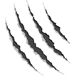

<body bgcolor="#ffffff">
 
<link href="html/table.css" rel="stylesheet" type="text/css">

<table  width="100%" border=0 cellspacing=0 cellpadding=0 style="padding: 0 0 5px 0; border: 1px solid #919699; background: #e9e9e9;">
<tr><td>&nbsp;<br>

<center>
   <b><i><font color="#000000" size="+2">gopaw</font></i></b>
   <p>
   
   <p>
   <b><i><font color="#000000" size="-1">A refactoring of the Good Old PAW.</font></i></b>
</center>

<hr>

<table border=0><tr><td>  

  <li><a href="html/gopaw_introduction.html" target="Contents">Introduction</a></li>
  <li><a href="html/gopaw_download.html" target="Contents">Download and run</a></li>
  <li><a href="html/gopaw_docker.html" target="Contents">Docker</a></li>
  <li><a href="html/gopaw_hdf5.html" target="Contents">Read a g4tools HDF5 file</a></li>
  <li><a href="html/gopaw_fits.html" target="Contents">Read a FITS file</a></li>
  <li><a href="html/gopaw_root.html" target="Contents">Read a ROOT file</a></li>
  <li><a href="html/gopaw_python.html" target="Contents">Python instead of COMIS</a></li>
  <li><a href="html/gopaw_cpp.html" target="Contents">C/C++ instead of COMIS</a></li>
  <li><a href="html/gopaw_f77.html" target="Contents">f77 instead of COMIS</a></li>
  <li><a href="html/gopaw_offscreen.html" target="Contents">Running offscreen</a></li>
  <li><a href="html/gopaw_styles.html" target="Contents">Styles</a></li>
  <li><a href="html/gopaw_extensions.html" target="Contents">Extensions</a></li>
<!--  
  <li><a href="html/gopaw_usage.html" target="Contents">Usage</a></li>
-->
  <li><a href="html/gopaw_gallery.html" target="Contents">Gallery</a></li>
  <li><a href="html/gopaw_old_docs.html" target="Contents">Old CERN PAW docs</a></li>
  <li><a href="http://gbarrand.github.io" target="_top">softinex portal</li>

</td></tr></table>

<hr>

<center>
<address>
  <a href="mailto:barrand@lal.in2p3.fr">Guy Barrand</a>
  <font size="-1" color="#252E78">CNRS/IN2P3/LAL</font>
</address>
</center>

</body>

